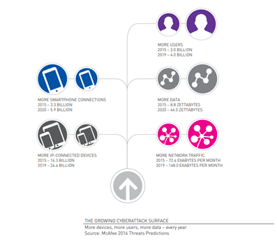
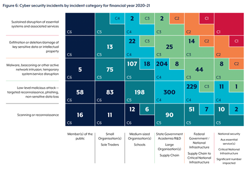

What is Cybersecurity?
Cybersecurity is the practice of protecting data and digital assets from external threats. During the 2020-2021 Financial Year the Australian Cyber Security Centre observed 67,500 cybercrime reports and a total self-reported losses of $33 billion due to cybercrime. As the use of technology increases so too does the need for protection of our data and devices.

Cyberattacks come in many forms, some common examples are:
- Malware – viruses used to maliciously cause harm to systems.
- Ransomware – like Malware however steals confidential data and demands currency in exchange for access or to avoid public shaming.
- Phishing/Social Engineering – legitimate looking emails and messages are used to trick people into supplying their sensitive information. There has been an increase in this due to the pandemic and many people working remotely.
- DDoS – Distribute Denial of Service attack on a website making it crash forcing downtime.
- APTs – Advanced Persistent Threats, an intruder(s) infiltrates a system without being detected and spies on business operations and sensitive information often for prolonged periods.
- Man-in-the-middle – an intruder eavesdrops/intercepts messages on unsecure networks to steal data.
- Backdoor Trojan – hackers create a weakness in a victim’s system which allows them access remotely.
- XSS attack – Cross-site scripting, hackers insert malicious code usually in JavaScript to steal user information.
- SQL injection – a hacker inserts SQL statements into legitimate website’s SQL code to potentially steal information or even destroy a database.
- Supply Chain attack – malicious actors can compromise widely used supply chain software products to disrupt networks.
- Cyberwarfare – the use of cyberattack by one nation state against another to steal information or disrupt society such as the banking industry to destabilize. A cyberespionage tool most likely developed by Russia called Energetic Bear was used to access company networks in the energy sector in countries including US, Spain, Japan and Germany.

The costs of implementing cybersecurity strategies that are comprehensive and use best practices are justified as the costs of cyberattacks are extensive and cause major disruptions. These costs include lost revenue, lack of consumer trust and the cost of responding to breaches. Where Critical Infrastructure such as Energy, Telecommunications and Hospitals are the target of cyber-attacks there is also potential for harm or loss of life.
Currently cybersecurity covers five main areas,
- Critical Infrastructure
- Applications
- Networks
- Cloud
- Internet of Things